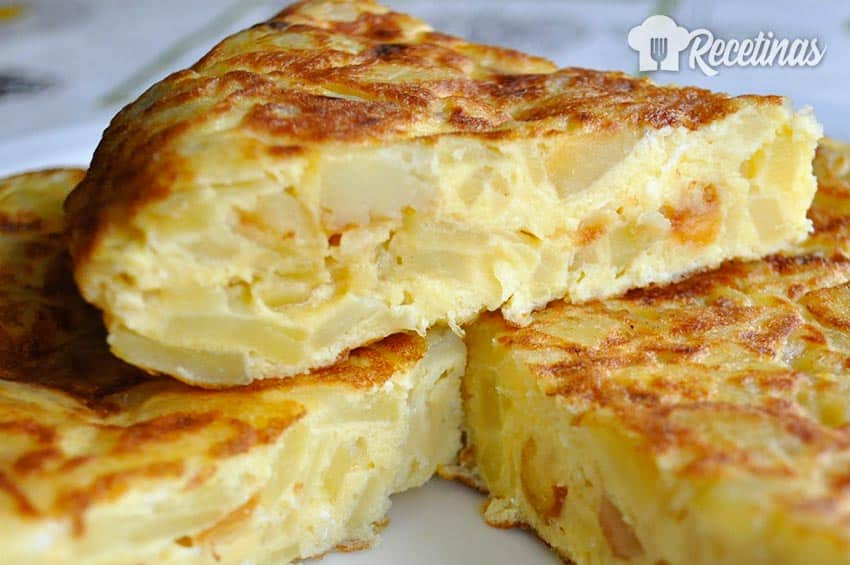

Tortilla de papas

A sort of pie made of potatoes and eggs
Ingredients
Steps
- Peel and cut the potatoes into thin slices
- Fry all the potato slices until they are mushy
- Add the potatoes to 3 to 5 beaten eggs
- Dump the mixture into a hot oiled pan
- Flip it in 2 to 5 minutes, depending on if you want a runny inside or not